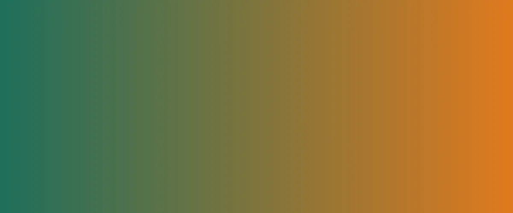

Transparência
Prestamos contas de cada recurso recebido.
A ONG Apoio leva alimentação, educação e acolhimento a famílias em situação de vulnerabilidade.
Quero ajudar
Garantir dignidade e oportunidades por meio de ações comunitárias, com transparência e respeito a cada pessoa atendida.
Prestamos contas de cada recurso recebido.
Escutamos as famílias antes de agir.
Só crescemos com voluntários e doadores.